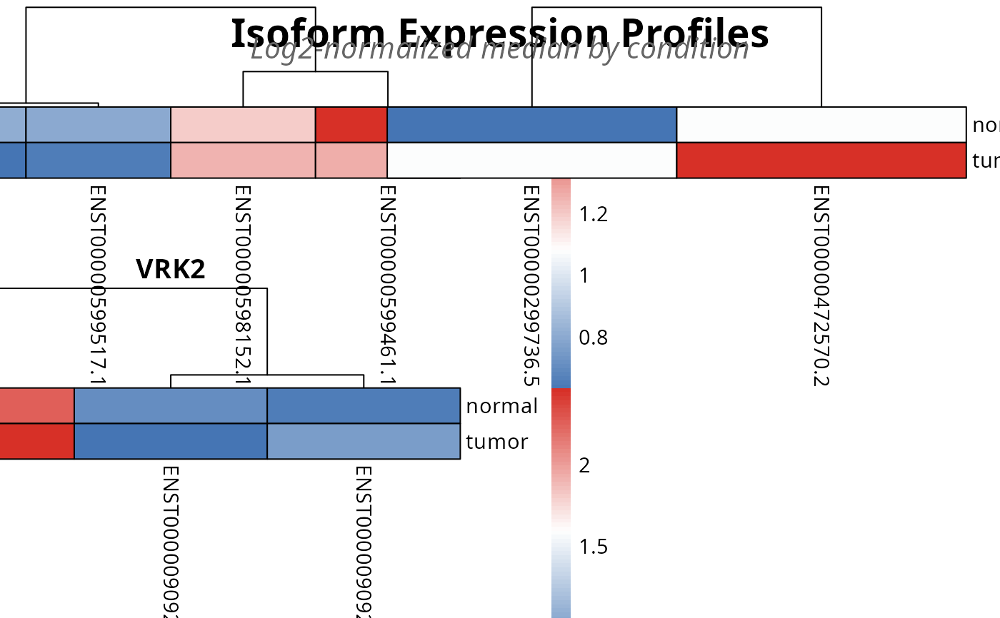

Plot Top Transcripts from TSENATAnalysis Object
Source:R/s4_functions_expression.R
plot_expression.RdS4 wrapper for . plot_expression() that
extracts data directly from
a TSENATAnalysis object. Automatically retrieves the SummarizedExperiment and
SAIT results for visualizing transcript abundance across conditions.
Usage
plot_expression(
analysis,
gene = NULL,
condition_col = NULL,
top_n = 4,
output_file = NULL,
metric = c("median", "mean", "variance", "iqr"),
use_tpm = TRUE,
width = NULL,
height = NULL,
fontsize = 16,
cellwidth = 0,
cellheight = 0,
layout_ncol = 2,
verbose = FALSE,
...
)Arguments
- analysis
TSENATAnalysis. An S4 object containing a processed SummarizedExperiment and optional SAIT interaction results.- gene
characterorNULL. Gene identifier(s) to plot. If a vector of multiple genes is provided, plots all of them. If NULL, automatically selects the top genes from SAIT results based ontop_nparameter (genes with lowest p-values). Default: NULL (auto-extract from sait_results).- condition_col
character. Column name in colData(se) specifying group assignments (default: 'sample_type').- top_n
numeric. Number of top transcripts to display for each condition (default: 3).- output_file
characterorNULL. Optional file path to save the plot. Supported formats: .pdf, .png, .jpg. Default: NULL (no file output).- metric
character. Method for ranking transcripts within genes. One of 'median', 'mean', 'variance', or 'iqr' (default: 'median').- use_tpm
logical. IfTRUE, uses TPM (Transcripts Per Million) from metadata instead of raw counts (default: FALSE). TPM is normalized for sequencing depth and is recommended for comparing expression across samples. Requires TPM data in metadata from `build_analysis()` or `.build_se()` with `tpm` parameter. Raises error if TPM not available and `use_tpm = TRUE`.- width
numericorNULL. Output image width in inches. If NULL, automatically calculated based on number of genes (default: ~13 inches per column).- height
numericorNULL. Output image height in inches. If NULL, automatically calculated based on number of genes (default: ~10 inches per row + headers).- fontsize
numeric. Base font size for heatmap titles and labels (default: 16pt). Automatically scaled for readability.- cellwidth
numeric. Width of individual heatmap cells in pixels. If 0 (default), uses adaptive sizing based on data dimensions and layout. Set > 0 to override dynamic sizing.- cellheight
numeric. Height of individual heatmap cells in pixels. If 0 (default), uses adaptive sizing based on data dimensions and layout. Set > 0 to override dynamic sizing.- layout_ncol
numeric. Number of heatmaps per row in fixed layout (default: 2). If NULL, uses adaptive layout based on transcript counts.- verbose
logical. IfTRUE, print diagnostic messages during plotting (default: FALSE).- ...
Additional arguments passed to the base plotting function.
Value
Invisibly returns the output file path (if `output_file` provided), or invisible(NULL) if rendering to active graphics device. Graphics are rendered to the active grid device for capture during vignette compilation.
Details
This wrapper extracts the following from analysis:
- SummarizedExperiment
From
analysis@secontaining transcript counts- SAIT results
From
analysis@sait_results$sait_interactionfor gene selection
If no gene is specified, the function automatically selects the top gene from the SAIT results (lowest p-value). This simplifies visualization of genes with significant q x condition interaction effects.
See also
TSENATAnalysis for object structure
Examples
# Plot 6: Top transcripts across groups
data(readcounts)
readcounts <- as.matrix(readcounts)
mode(readcounts) <- 'numeric'
metadata_df <- read.table(
system.file('extdata', 'metadata.tsv', package = 'TSENAT'),
header = TRUE, sep = '\t'
)
gff3_dataset <- system.file('extdata', 'annotation.gff3.gz', package =
'TSENAT')
# Configure analysis parameters first
config <- TSENAT_config(
sample_col = 'sample',
condition_col = 'condition',
subject_col = 'paired_samples',
paired = TRUE,
control = 'normal',
q_values = seq(0, 2, by = 0.1)
)
# Build analysis with configured parameters
analysis <- build_analysis(
readcounts = readcounts,
tx2gene = gff3_dataset,
metadata = metadata_df,
config = config,
tpm = tpm,
effective_length = effective_length
)
analysis <- filter_analysis(analysis, stringency = 'severe')
analysis <- calculate_diversity(
analysis,
q = seq(0.2, 2, by = 0.4),
verbose = FALSE
)
analysis <- suppressWarnings(calculate_sait(
analysis,
method = 'lmm',
verbose = FALSE
))
plot_file <- plot_expression(analysis, top_n = 2)

# print(plot_file)